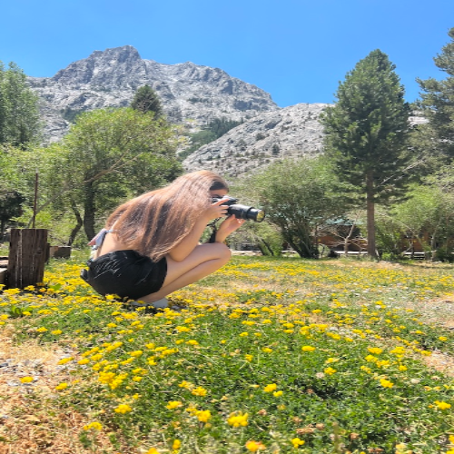
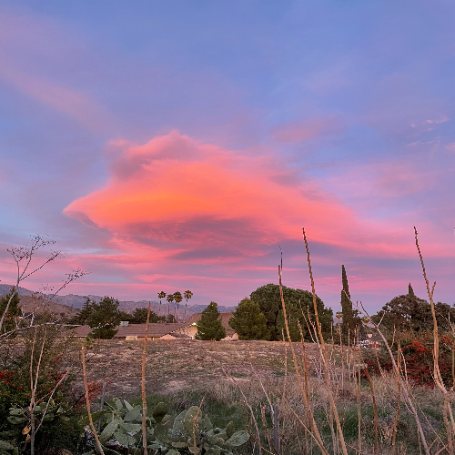
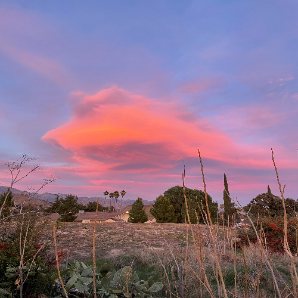

Isabelle Guerrero
Photography for me is many things - A way to tell people’s stories without words and exploring light, but most importantly a way to freeze moments in time so we can always have and see the memory. It started as a fun thing to do just for me, but it grew into a passionate pursuit to capture all the emotion, depth, and beauty we see every single day. As a new photographer, I take every opportunity to snap pictures of things I find or others might find interesting and share them with any and everyone. I am always trying to learn more and more through experience and feedback from the people around me.
I take photos of all kinds, portraits, lifestyle, and nature. I am constantly experimenting with new techniques and styles to make a large range of photos I can take. I find it challenging and exciting to try new things even if they don't always work out the first time, or give the results I want. I keep trying. No matter what I'm photographing I aim to create something that feels authentic and resonates with me emotionally. I think that all photos should show what an image feels like, not only looks like.
I built my creative process on connection. I believe that all the best photographs come from a collective feeling, like family, friends, love. I aim to show trust, understanding, and authenticity in the pictures I take, the people and animals I take in them, and other photographers doing the same thing I am. I hope to keep growing and eventually be able to do sessions for others and help capture some of their greatest moments.
As someone who is still very early in my photography journey, I value growth and exploration very much. I am always learning, whether it is from mentors, other artists, or the experiences I have and see all around me. Every picture, no matter how small or important, teaches me something new, it could be about light, perspective, angels, storytelling, or what is important to take pictures of. Photography is no longer something I do just for fun, but now is something that I look for in everything I do between myself, others, and those who view my work.
I draw my inspiration from everything about everyday life, no matter how small or subtle like the way light filters through a window, sunlight reflecting off a suncatcher and filling a room with a rainbow of colors, fleeting expressions, even quiet or “boring” moments between people. No matter how big or little an action is there is beauty in everything. My main goal is to capture those details in a way that is personal and forever. I love taking pictures that capture genuine human emotions and actions when posing for a camera is not a focus.
Beyond the camera, I am someone who simply loves exploring new places, meeting new people, trying new things and finding the joy and beauty in it all. I see photography as a way to do all the things I love while being able to freeze them in time and share my joy and love with others.
Experience
Secretary
• Answered phones and took messages
• Customer interaction
• Cleaned and organized office
Teaching Assistant
• Organizing classroom
• Reviewing and grading students work
• Running errands for teacher
Food Service
• Brews/perpares teas and toppings
• Counts and manages register
• Trains new employees
• Takes orders and makes drinks quickly
Education
UC Riverside
Portfolio



